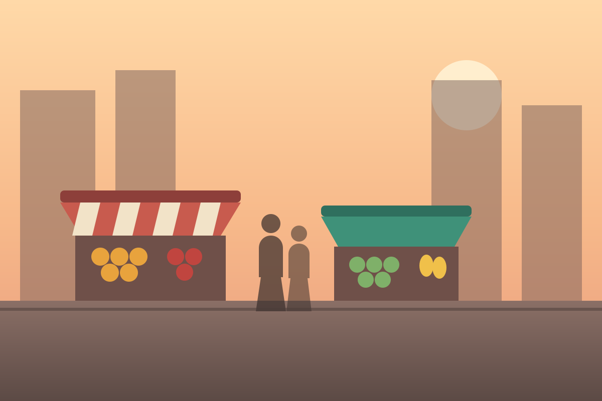

Pictures in a conversation
-
The market was open early today.
-

-
Mine from last night.
The loading state is not about the spinner
Press either button above and watch what does not happen: nothing below
moves. The bubble reserves the picture's own shape from its width and
height, so the thread never reflows when the image lands.
This is why a square placeholder is worse than none. A square that then grows into a
3:2 photograph does the jump anyway — and now it does it twice, once when the box
appears and again when it changes shape. The two pictures here are
1200×800 and 900×1200, and each skeleton is that picture.
Alt text is the message
A picture message with no alt is a message with no content at all for
some readers — worse than a text message that failed to send, because nothing says
anything is missing. The alt is written as what somebody would have said about the
photo, not as "image".
When it does not arrive
Break the wide one points the picture at a file that is not there. A broken image icon says nothing; the bubble says what happened, and the alt text is still there to say what was in it.